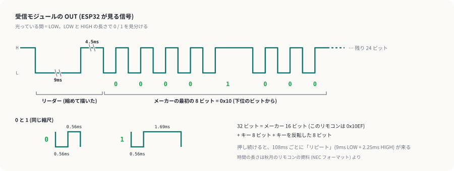
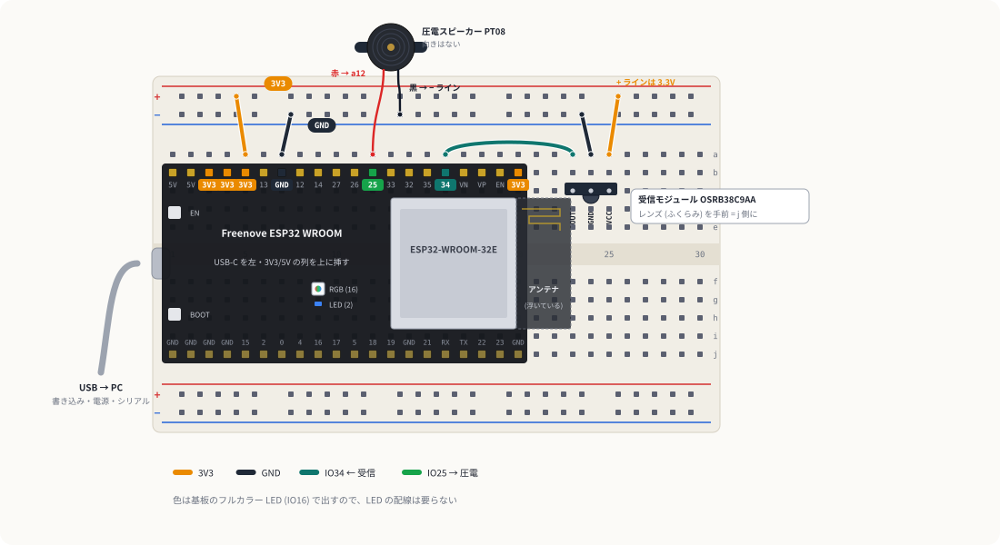
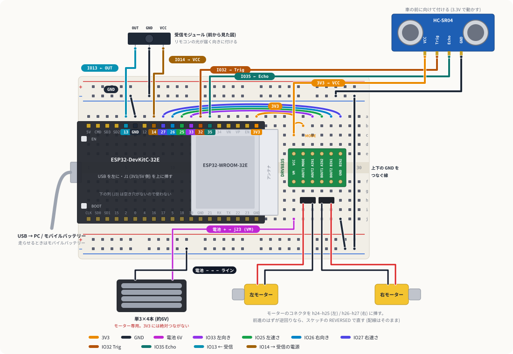

赤外線リモコン
秋月の赤外線リモコンの信号を、受信モジュールと ESP32 で読みます。ライブラリは使わず、信号が変わった時刻の差を測って 0 と 1 を読み分けます。読めたら、ボタンごとに色と音を出し、最後は障害物回避カーをリモコンで操縦します。
1しくみ
リモコンは 38kHz で点滅する赤外線
リモコンは目に見えない赤外線 (940nm) を、1 秒に 3 万 8 千回の速さで点滅させながら送ります。受信モジュールはその点滅だけを拾い、点滅が来ている間は OUT を LOW、来ていない間は HIGH にします (出力はアクティブロー)。電灯や日光のような点滅しない光は無視されます。
NEC フォーマット: LOW と HIGH の長さで 0 と 1

ESP32 には「ピンのレベルが変わるたびに関数を呼ぶ」割り込みがあります。変わるたびに micros() で時刻を見て、前に変わってからの時間を測り、上の図の長さと比べて 0 か 1 かを決めます。32 ビットそろえば 1 回のボタン押しです。キーの 8 ビットと、それを反転した 8 ビットが合わなければ「読み違い」として捨てます。
2配線
受信モジュールは レンズ (丸いふくらみ) を手前に向けて、左から OUT・GND・VCC です (データシートより)。c23・c24・c25 に、レンズが j 列の側を向くように挿します。電源は 2.7〜5.5V なので 3.3V で動かし、OUT をそのまま ESP32 に入れます。

| # | どこから | どこへ | 役割 |
|---|---|---|---|
| 1 | a5 (3V3) | 上の + ライン | このページでは + ラインが 3.3V |
| 2 | a7 (GND) | 上の − ライン | GND を配る |
| 3 | 受信モジュール | c23・c24・c25 | OUT・GND・VCC。レンズを j 列の側へ |
| 4 | a16 (IO34) | a23 | OUT を読む |
| 5 | 上の − ライン | a24 | 受信モジュールの GND |
| 6 | 上の + ライン | a25 | 受信モジュールの VCC (3.3V) |
| 7 | 圧電スピーカーの 赤 | a12 (IO25) | 音を出す。向きはないので黒と逆でもよい |
| 8 | 圧電スピーカーの 黒 | 上の − ライン | GND |
圧電スピーカーの線は細いより線です。先をよじってそのまま挿せますが、抜けやすければピンヘッダーにはんだ付けしておくと楽です。色は基板のフルカラー LED で出すので、LED の配線はありません。
3段階 1: ボタンのコードを読む
配線 1〜6 だけで動きます。リモコンを受信モジュールに向けてボタンを押します。
メーカー 0x10EF キー 0x??と出る (メーカーの番号 10EF はリモコンの資料のとおり)- ボタンごとにキーの番号が違う。押し続けると
(リピート)が続く - 青い LED (IO2) が、受け取るたびに光る
方向キー 8 つと機能キー 5 つの番号を、紙かメモに書いておきます。段階 3 で車の操縦に割り当てます。
4段階 2: ボタンごとに色と音
配線 7・8 (圧電スピーカー) を足します。キーの番号から色と音の高さを決めるので、表を書かなくても動きます。押し続けると音が伸びます。
- ボタンを押すたびに、基板のフルカラー LED がボタンごとの色になり、ドレミのどれかが鳴る
- 押し続けている間は音が続き、離すと止まる
5段階 3: 障害物回避カーをリモコンで操縦する
車の配線はそのままで、受信モジュールをオス-メス線 3 本で足します。車の ESP32 (DevKitC) は 3V3 の穴が空いていないので、IO14 を HIGH にして受信モジュールの電源にします。受信モジュールは 1.5mA (最大) しか使わないので、GPIO から取れます。

| # | 受信モジュール | 車のブレッドボード | 役割 |
|---|---|---|---|
| 1 | OUT | a5 (IO13) | 信号を読む |
| 2 | GND | 上の − ライン | GND |
| 3 | VCC | a8 (IO14) | スケッチで HIGH にして 3.3V を出す |
- 段階 1 で書き留めたキーの番号を、
KEYSの-1のところに0x18のように書く。止まるキーと速さ切り替えのキーはKEY_STOP・KEY_SPEEDに。 LEFT_REVERSED/RIGHT_REVERSEDを障害物回避カーと同じにして、車の ESP32 に書き込む。- タイヤを浮かせて試す。前のキーを押している間だけ両方のタイヤが前に回り、離すと止まれば OK。
- 床に置いて走らせる。前に壁があると、前のキーを押しても進まない (後ろや回転はできる)。
- 表に書いていないキーを押すと、シリアルモニタに
表にないキー 0x??と出る - キーを離すと 0.25 秒ほどで止まる (押している間は 108ms ごとにリピートが届く)
6うまくいかないとき
| 症状 | 見るところ |
|---|---|
| 何を押しても何も出ない | リモコンの電池シートを抜いたか。受信モジュールの向き (OUT・GND・VCC の順)。a23 と IO34 の線 |
読み違い がよく出る | リモコンを近づける。直射日光やインバーターの照明の近くを避ける |
| リピートは出るのにキーが出ない | 押した最初の信号を取りこぼしている。もう一度押し直す |
| 車が止まらない / カクカクする | HOLD_MS を調整する。短すぎるとリピートの間で止まり、長すぎると離してからも走る |
7改造のアイデア
- 家のリモコンも読んでみる: NEC フォーマットのリモコンなら同じスケッチで読める。日本の家電には別の形式 (家製協フォーマットなど) のものも多く、その場合は「何も出ない」になる。リーダーの長さを測って表示するように書き替えると、どの形式か見分ける手がかりになる。
- 針の温度計を切り替える: 針で指す温度計にリモコンを足し、ボタンで「部屋の温度 / 目標の温度」を切り替える。
- リモコンで首振り: 首振りガジェットのサーボを左右のキーで回す。